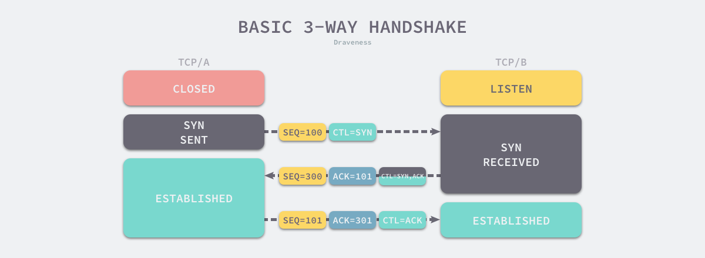

TCP/UDP总结与梳理
TCP也是老生常谈了，在四层协议栈中基本是必知必会，还拥有大量的八股文面试内容，本篇旨在思考与总结协议栈的相关知识，梳理一下加深一下理解，也希望能有更深入的理解，不是面向面试学习。
讲讲TCP
应用层协议总是离不开TCP作为基础，面向连接为应用层协议屏蔽了更多的网络层的感知，那什么是「面向连接」？
RFC 793 - Transmission Control Protocol
第四页：
Connections:
The reliability and flow control mechanisms described above require
that TCPs initialize and maintain certain status information for
each data stream. The combination of this information, including
sockets, sequence numbers, and window sizes, is called a connection.
告诉我们连接用于保证可靠性和流控制机制的信息，包括了三个部分：
* Socket
* 序列号
* 窗口大小那么我们可以理解为对与一个连接来说，需要维护两端的上述三种信息共识：连接Socket用于标示基础信息：互联网地址标示、端口信息；窗口用来做流量控制；序列号用来追踪发送顺序与发送状态的确认。
三次握手
那如何建立这三种信息的基本共识呢？又回到了大家熟悉无比的三次握手：

需要注意的是，这里说三次握手建立三种信息共识并不是说三次握手的主要目的是建立三种信息的共识，共识严格来说基于约定，要完全保证100%安全可靠的共识和这里说的共识不是一路货色，这里只是说这个基本共识在这三次握手的过程中达成了。
那么就有了一些延伸的问题，为什么要三次握手才能实现共识？四次行不行？两次行不行？为了什么？
相信大家但凡面试都躲不过这几个烂问题，求职者也是基于各路博客自身理解各显神通然后将这问题扣上一顶「八股文」的大帽打入冷宫不在思考，但是这样真的好么？
关于次数的思考
首先我们不考虑使用四次行不行这种问题，如果一个事情能用三次解决就必然可以用四次解决，同样也可以100次解决，只是效率低而已，我们不需要进行拓展的讨论。
那么少点呢？用两次可以么？A告诉B自己的地址/序列号/窗口大小，B再告诉A自己的地址/序列号/窗口大小是不是就可以了呢？
实际上，在完美的网络环境下（所有均可达/均有序）确实可以，但是网络总是充满了不确定性：

只要网络状况不好，A发起重试，两个请求连接的数据包到B，B该如何处置？丢弃哪一个，如何分辨是不是因为网络超时而晚到的历史连接？
所以便有了三次握手与RST控制消息，将连接的建立权移交给连接发起放，接受方将连接建立的序列号+1作为当前连接建立的回复序列号发送给发起方（SEQ）,发起方就可以根据SEQ反推出发起的连接是否超时，超时则回复RST释放资源，正常则ACK确认连接。你看，这下连序列号同步（SYN）也做了，自然就不需要第四次握手了。
RFC中也是说明主要解决重复的历史连接问题：
RFC 793 - Transmission Control Protocol
第31页：
The principle reason for the three-way handshake is to prevent old
duplicate connection initiations from causing confusion.
RFC中也有示意图，童鞋们自行采阅。
数据传输
连接建立啦，自然要开始传输信息了，那么我们该如何传输数据呢？直接怼上去一个包搞定所有数据那肯定不行🙅，万一我这数据多咋整，链路上设备不支持给我包阉了咋整？所以我们在发送前，还要做好分包，做分包前还要知道当前链路支持我怎么分包，那么问题简化为一下三个步骤：
- 调查链路上可以接受的包大小
- 分析当前数据大小进行拆包
- 发送数据包并填充序列号
- 接收端获取数据包并回复ACK
- 发送方获取ACK移动发送窗口or重发
如何调查链路上可以接受的包大小？
这里有个「路径最大传输单元发现」（Path MTU Discovery，PMTUD）机制来确定两个主机间的最大传输单元（MTU）,工作原理如下：
- 向目的主机发送 IP 头中 DF 控制位为 1 的数据包，DF 是不分片（Don’t Fragment，DF）的缩写
- 路径上的网络设备根据数据包的大小和自己的 MTU 做出不同的决定：
- 如果数据包大于设备的 MTU，就会丢弃数据包并发回一个包含该设备 MTU 的 ICMP 消息；
- 如果数据包小于设备的 MTU，就会继续向目的主机传递数据包；
- 源主机收到 ICMP 消息后，会不断使用新的 MTU 发送 IP 数据包，直到 IP 数据包达到目的主机
这里有个问题需要注意，linux默认是开启该方式的，你可以通过修改配置关闭PMTUD配置，那么会在发真实数据的时候被中间链路的设备拒绝，然后再重新设置MTU进行重试。
一般的路由设备的MTU是1500个字节，
- 对于IP协议来说，要剪掉20个协议头的大小，那么通常的IP包就是1480个字节
- 对于TCP协议来说，要剪掉20个IP协议头，20个TCP协议头，就是1460个字节
- 对于UDP协议来说，要剪掉20个IP协议头，8个UDP协议头，就是1472个字节
四次挥手
因为TCP是全双工，所以需要确定双方不在发送数据。
- 第1次挥手由客户端向服务端发起，服务端收到信息后就能确定客户端已经停止发送数据。
- 第2次挥手由服务端向客户端发起，客户端收到消息后就能确定服务端已经知道客户端不会再发送数据。
- 第3次挥手由服务端向客户端发起，客户端收到消息后就能确定服务端已经停止发送数据。
- 第4次挥手由客户端向服务端发起，服务端收到信息后就能确定客户端已经知道服务端不会再发送数据。
RFC 793 - Transmission Control Protocol
第38页
TCP A TCP B1 ESTABLISHED ESTABLISHED
2 (Close)
FIN-WAIT-1 –> <SEQ=100><ACK=300><CTL=FIN,ACK> –> CLOSE-WAIT3 FIN-WAIT-2 <– <SEQ=300><ACK=101><CTL=ACK> <– CLOSE-WAIT
4 (Close)
TIME-WAIT <– <SEQ=300><ACK=101><CTL=FIN,ACK> <– LAST-ACK5 TIME-WAIT –> <SEQ=101><ACK=301><CTL=ACK> –> CLOSED
6 (2 MSL)
CLOSED
为什么第二次第三次不能合并呢？
因为挥手由客户端发起，客户端通知服务端不发数据了，但是服务端可能还在发送数据会客户端，所以只能先确认收到，再等自己发送内容结束后再发送不在发送的通知。
为什么客户端有TIME WAIT
- 第一，为了保证客户端发送的最后一个ACK 报文能够到达服务器。我们必须假设网络是不可靠的，ACK 报文可能丢失。如果服务端发出FIN 报文后没有收到ACK 报文，就会重发FIN 报文，此时处于TIME-WAIT状态的客户端就会重发ACK 报文。当然，客户端也不能无限久的等待这个可能存在的FIN 报文，因为如果服务端正常接收到了ACK 报文后是不会再发FIN 报文的。因此，客户端需要设置一个计时器，那么等待多久最合适呢？所谓的MSL（Maximum Segment Lifetime）指一个报文在网络中最大的存活时间，2MSL就是一个发送和一个回复所需的最大时间。如果直到2MSL时间后，客户端都没有再次收到FIN 报文，那么客户端推断ACK 报文已经被服务器成功接收，所以结束TCP 连接。
- 第二，防止已失效的连接请求报文段出现在新的连接中。客户端在发送完最后一个ACK 报文后，再经过时间2MSL，就可以使由于网络不通畅产生的滞留报文段失效。这样下一个新的连接中就不会出现旧的连接请求报文。
同时发起的关闭请求
特殊的，客户端与服务端都传输完毕发起关闭请求也是存在的
RFC 793 - Transmission Control Protocol
第38页
TCP A TCP B1 ESTABLISHED ESTABLISHED
2 (Close) (Close)
FIN-WAIT-1 –> <SEQ=100><ACK=300><CTL=FIN,ACK> … FIN-WAIT-1
<– <SEQ=300><ACK=100><CTL=FIN,ACK> <–
… <SEQ=100><ACK=300><CTL=FIN,ACK> –>3 CLOSING –> <SEQ=101><ACK=301><CTL=ACK> … CLOSING
<– <SEQ=301><ACK=101><CTL=ACK> <–
… <SEQ=101><ACK=301><CTL=ACK> –>4 TIME-WAIT TIME-WAIT
(2 MSL) (2 MSL)
CLOSED CLOSED
TCP的性能问题
我们可以看到，RFC793都快四十年了，基础网络环境已经发生的翻天覆地的变化，所以自然的，TCP协议自然也带来的新能的问题，在网络发展的早期，包从发送到到达慢的主要原因来自与网络带宽的限制，是由于拥塞导致的，而TCP自然的就认为在包传输失败重传时将会采用拥塞阻塞的避免算法，详细的可以看TCP拥塞控制与滑动窗口，这种就是明显的历史原因了。
再者，TCP的三次握手与四次挥手也带来了不小的服务端与客户端的性能消耗，在维护状态机的同实Socket占用与资源释放缓慢。
还有就是重试机制在极限网络环境下带来的负担，高时延导致的大量超时ACK在重试后获取，而重试的报文又占用了带宽使网络环境更差。
总结一下，TCP存在性能问题主要体现在以下几个点：
- 拥塞避免会自动降低吞吐
- 握手与挥手带来的性能损耗
- 重试导致的带宽负担
讲讲UDP
UDP 协议一般作为流媒体应用、语音交流、视频会议所使用的传输层协议，我们大家都知道的 DNS 协议底层也使用了 UDP 协议(这个说法不严谨，TCP也是有用的)，这些应用或协议之所以选择 UDP 主要是因为以下这几点：
- 速度快:
这里主要相对于TCP的拥塞控制而言，对于现今的网络环境，丢包是很常见的，不存在拥塞控制会加速基础的网络报文交互。 - 无连接：
不需要三次握手，不需要三次挥手，无连接可以减少很多前置的性能损耗 - 无状态
没有连接状态，不用维护状态机，且不需要确认与重传 - 头部小
这个在上面有说过，因为不需要很多的状态机维护，所以可以省略很多标志位与头部信息，只需要基础的目标与来源信息，使UDP头仅仅需要占用8个字节
8个字节的请求头
有4个信息，每个都是2个字节，分别是：
- 源端口
- 目的端口
- 长度
- 校验码
特殊的，源端口是可选字段，校验码也可以置为0，而长度虽然占了两个字节，但是一般受限于MTU，指定不指定意义不大，所以真正有意义且必选的就只有目的端口了（那为啥不简化更轻？）
流媒体
为什么流媒体应用更加倾向于UDP？一则是流媒体的时效性要求使得重传重放与连接状态并不重要，一则是更小的头部可以提供更大的包体加速整体吞吐。
DNS
在早期域名少，内容压力不大的时候DNS基本由DNS支持，但因为后续互联网的发展，UDP受MTU的限制，TCP成为的UDP的兜底方案，即使用UDP发送失败（MTU限制）后启用TCP进行信息传输。
QUIC
google quic也是UDP实现，这个单独启一篇，且听下回分解。